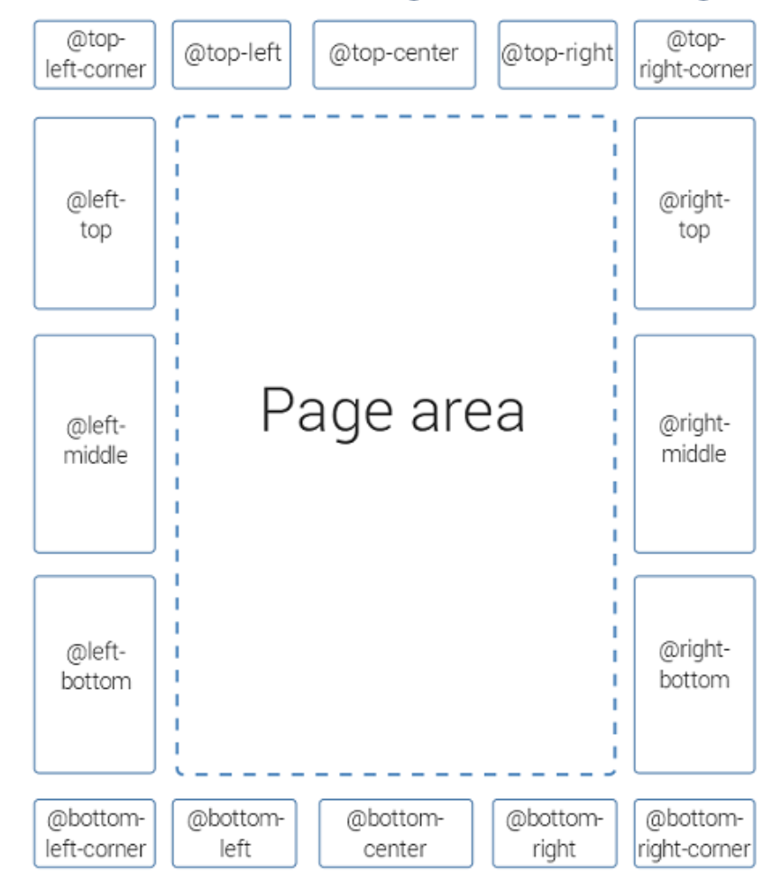

通过CSS定制PDF输出样式#
排版基础#
字体#
当我们选择加粗的时候，实际上应用的是粗体的字集，所以一般都要提前准备好对应的字库。
本次练习，我们选择MI Sans 作为汉字字体，下载：MI Sans
定制模板#
导出模板。
PDF外观定制#
导入字体#
@font-face 是一个 CSS 规则，用于自定义字体，让开发者可以将特定的字体文件加载到PDF中，而不依赖用户系统中预装的字体。
这里我们引入MISans的不同字重(Weight)的字体，分别是：
Normal
Bold
Thin
@font-face {
font-family: xiaomi-normal;
src: url(resources/fonts/MiSans-Normal.ttf);
}
@font-face {
font-family: xiaomi-bold;
src: url(resources/fonts/MiSans-Bold.ttf);
}
@font-face {
font-family: xiaomi-thin;
src: url(resources/fonts/MiSans-Thin.ttf);
}
指定正文字体#
正文字体决定了整个文档的观感，因为正文是全手册文字最多的。
/* 用正常字体 */
body {
font-size: 10pt;
font-family: xiaomi-normal;
}
/* 用瘦体 */
body {
font-size: 10pt;
font-family: xiaomi-thin;
}
大家感觉一下，哪个更高级，是不是瘦的字体更显高级？
S.H.E法则（纤细的，瘦弱的）
定制封面#
需要在封面添加下方三个要素：
右上角的小米logo
正下方添加出品机构 Xiaomi Group
说明书标题调整（dita map的title）
Page Media各区域的划分如下：

添加logo与出品机构#
/* 添加 logo */
/* 添加出品机构 */
@page front-page {
@top-right-corner {
content: url("resources/images/logo.png");
}
@bottom-center{
content: "Xiaomi Group";
}
}
微调logo与出品机构#
@page front-page {
@top-right-corner {
content: url("resources/images/logo.png");
/* 往下调整一下logo的位置 */
margin-top: 30px;
}
@bottom-center{
content: "Xiaomi Group \A 2024.11.11 ";
/* 微调字体 */
white-space: pre;
font-size: 10pt;
color: gray;
font-style: italic;
}
}
\A 的作用#
\A是 CSS 的一种特殊字符表示法，用于在content属性中插入“换行符”。它的效果需要结合
white-space: pre或white-space: pre-wrap属性才能实现换行。工作原理
：
当 CSS 渲染内容时，
content: "Line 1\A Line 2";会在“Line 1”和“Line 2”之间插入一个换行符。如果没有启用
white-space: pre或类似值，换行符会被忽略。
微调封面标题#
基本语法
1. *（通配选择器）
作用：选择所有元素。
范围：无论元素是
div、p、h1，只要它满足条件，都会应用此样式。
2. [class ~= "front-page/front-page-title"]
属性选择器：匹配带有
class属性，且其值中包含 以空格分隔的单词front-page/front-page-title的元素。条件：
~=操作符要求class的值中存在一个单独的单词与front-page/front-page-title完全匹配。
可以找到 projector.merged.html，在html中查找各元素的属性。
*[class ~= "front-page/front-page-title"] {
font-family: xiaomi-bold;
font-size: 26pt;
}
定制章节标题#
将标题设置为小米黄#FF6900，同时调大字体。
*[class ~= "topictitle1"] {
font-family: xiaomi-normal;
font-size: 16pt;
color: #FF6900;
}
*[class ~= "topictitle2"] {
font-family: xiaomi-normal;
font-size: 14pt;
color: #FF6900;
}
简化页眉页脚#
只保留章节标题和页码。
counter(page)：
动态计数器，表示当前页面的页码。
page是 CSS 内置计数器，自动递增，无需显式定义。
/*从全局变量 chaptertitle 中获取动态内容。*/
@page :left {
@top-left {
content: string(chaptertitle) " | " counter(page);
}
}
@page :right{
@top-right {
content: string(chaptertitle) " | " counter(page);
}
}
傻瓜式定制模板#
Styles Basket 可以让用户通过图形界面简单操作即可生成基础模板，并可使用css进一步定制。